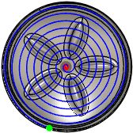
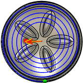

<div id="innerRadius"><p>最小の内側半径を設定します。</p>
<table class="tipTable" cellspacing="10">
<tr>
<td><center></center></td>
<td><center></center></td>
</tr><tr>
<td><center><p><b>内側半径なし</b></p></center></td>
<td><center><p><b>内側半径あり</b></p></center></td>
</tr></table>
<p><em>図は 3D 渦巻き</em></p>
</div>